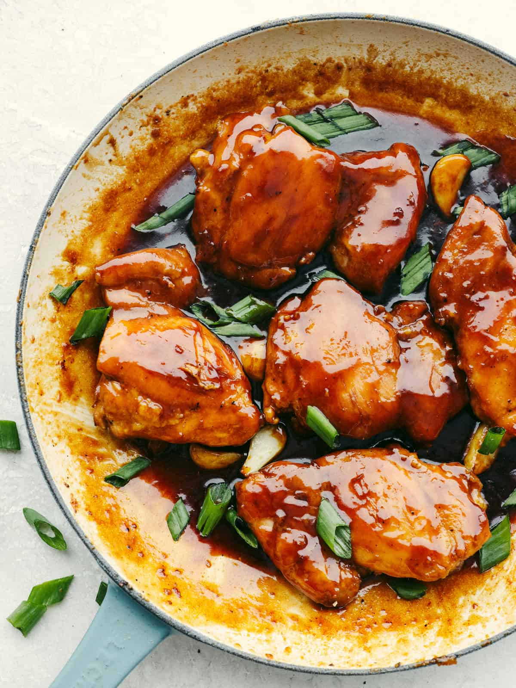

Caramel Chicken Recipe
Ingredients:
- 4 boneless chicken thighs
- 2 tablespoons vegetable oil
- 100g brown sugar
- 3 cloves garlic, minced
- 1 tablespoon soy sauce
- 1 tablespoon fish sauce
- 1 teaspoon freshly grated ginger
- 1/2 teaspoon black pepper
- 1 cup water
- 1 tablespoon rice vinegar
- Spring onions & sesame seeds for garnish
Instructions:
- Heat oil in a pan over medium heat and brown the chicken on both sides.
- Remove the chicken and set aside.
- In the same pan, add sugar and cook until melted and caramelized.
- Stir in garlic, soy sauce, fish sauce, ginger, pepper, and water.
- Return the chicken to the pan and simmer until fully cooked and coated with caramel glaze.
- Add rice vinegar, stir well, and cook for another minute.
- Garnish with spring onions and sesame seeds before serving.